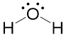

共用電子對的分布決定鍵的極性；由非極性共價鍵 → 極性共價鍵 → 離子鍵，離子性逐漸增高。
鍵極性：$|\Delta\chi|$ 愈大，鍵愈極性；約 $> 1.7$ 以離子性為主。
教材示意：電子雲與部分電荷（對照右頁圖）
F 電負度（4.0）大於 H（2.1），共用電子偏向 F → H 端 $\delta^+$、F 端 $\delta^-$。
$|\Delta\chi| \approx 0$ 非極性 ｜ $0.4\!\sim\!1.7$ 極性共價 ｜ $>1.7$ 離子性
偶極矩 = 帶電體的帶電量 × 兩帶電體的距離
單位：狄拜（Debye，D）
Δ(EN) 與偶極矩由 HF → HI 遞減。圖中紅色十字箭頭在 H—X 鍵上方，表示法與左側 HF 相同。
鍵偶極描述單一共價鍵的極性；分子偶極為各鍵偶極的向量和，決定分子是否為極性分子。
彎曲形（約 104.5°）；兩個 O—H 鍵偶極向 O 疊加，另有孤對電子影響方向。
分子偶極矩 μ ≈ 1.8 D
含 O—H 極性鍵與 C—O 鍵；分子不對稱，鍵偶極無法完全抵消。
分子偶極矩 μ ≈ 1.7 D
四面體形但四個鍵不同（C—H 與 C—Cl），鍵偶極向量和 ≠ 0。
分子偶極矩 μ ≈ 1.9 D
極性分子 $\mu \neq 0$ ｜ 非極性分子 $\mu = 0$
注意：有極性鍵 ≠ 極性分子！
CO₂（直線）、BF₃（平面三角）、反式 C₂H₂Cl₂ 等，鍵偶極互相抵消。
極性 HCl · NH₃ · 順-1,2-二氯乙烯
非極性 CO₂ · BF₃ · 反-1,2-二氯乙烯

點選上方分子：左欄 JPG、右欄 PDB 3D。共 10 種分子（H₂O、CO₂、NH₃、NF₃、BF₃、O₃、CH₄、CF₄、順/反式二氯乙烯）。
建議比較：NH₃ vs NF₃（孤對與鍵偶極）；順式 vs 反式 C₂H₂Cl₂（同分異構物極性）。
口訣：先看鍵極性 → 再看分子對稱性與孤對電子。
| 作用力 | 發生對象 | 相對強度 |
|---|---|---|
| 倫敦分散力 | 所有分子 | 最弱 |
| 偶極–偶極力 | 極性分子 | 中等 |
| 氫鍵 | H 與 F、O、N | 較強 |
| 離子–偶極力 | 離子與極性分子 | 強 |
倫敦力：瞬間偶極誘發鄰近分子產生誘導偶極；分子愈大、電子數愈多，分散力愈強。
存在於極性分子之間。極性分子的恆久偶極，其正端與負端互相吸引。極性愈大，作用力愈強。
極性分子的偶極，導致鄰近非極性分子的電子雲發生變形，產生誘導偶極而互相吸引。
存在於所有分子之間。電子雲瞬間不均勻分布產生瞬間偶極，並誘發周圍分子產生誘導偶極。
隨著惰性氣體原子序增加，電子總數增多，原子尺寸變大，倫敦色散力會顯著增強，導致沸點與熔點持續升高。此圖展示 He ‒ Rn 的沸點與熔點走勢，點擊任意資料點即可在中央看到對應原子的 3D 球狀模型。
隨著正烷類碳數增加，電子總數增多，分子尺寸變大，倫敦色散力（瞬時偶極‑瞬時偶極）會顯著增強，導致沸點與熔點持續升高。
分子量相近時，極性分子因額外具備永久偶極-偶極力，其分子間作用力較強。
非極性：僅倫敦力 ｜ 極性：倫敦力+偶極力 ➔ 沸點：極性 > 非極性
| 非極性分子（μ = 0） | 極性分子（μ ≠ 0） | |||||||
|---|---|---|---|---|---|---|---|---|
| 分子結構 | 分子 | 分子量 | 沸點(°C) | 分子結構 | 分子 | 分子量 | 沸點(°C) | |
| N₂ | 28 | −196 | vs | CO | 28 | −192 ↑ | ||
| SiH₄ | 32 | −112 | vs | PH₃ | 34 | −85 ↑ | ||
| GeH₄ | 77 | −90 | vs | AsH₃ | 78 | −62.5 ↑ | ||
| Br₂ | 160 | 59 | vs | ICl | 162 | 97 ↑ | ||
三種同分異構物（分子量均為 72），因形狀不同導致接觸面積與對稱性差異，進而影響沸點與熔點。
| 分子結構圖 | 分子名稱 | 形狀 | 接觸面積 | 沸點 (°C) | 熔點 (°C) | 說明 |
|---|---|---|---|---|---|---|
| 正戊烷 n-Pentane |
直鏈狀 | 最大 ↑ | 36 | −129.7 | 直鏈接觸面積最大，倫敦力最強 → 沸點最高 | |
| 異戊烷 Isopentane |
單支鏈 | 中等 | 28 | −159.8 | 支鏈使接觸面積縮小，分散力較弱 | |
| 新戊烷 Neopentane |
球狀（高對稱） | 最小 ↓ | 9.5 | −16.4 ↑ | 高對稱球狀，接觸面積最小→沸點最低；晶格最緊密→熔點最高 |
| 化合物 | 異構物 | 分子結構圖 | 偶極矩 | 熔點(°C) | 沸點(°C) | 主要原因 |
|---|---|---|---|---|---|---|
| 1,2-二氯乙烯 C₂H₂Cl₂ |
順式 (cis) | 1.9 D | −80 | 60.1 ↑ | 偶極-偶極力較強 → 沸點高 | |
| 反式 (trans) | 0 D | −50 ↑ | 48.7 | 對稱，晶格緊密 → 熔點高 | ||
| 2-丁烯 C₄H₈ |
順式 (cis) | 0.25 D | −139 | 3.7 ↑ | 極性略大 → 沸點較高 | |
| 反式 (trans) | 0 D | −106 ↑ | 0.9 | 完全對稱 → 熔點較高 |
分子間作用力愈強 → 克服作用力所需能量愈大 → 沸點愈高。
例：H₂O (100°C) >> H₂S (−60°C)；NH₃ > PH₃
下列何者為極性分子？
CO₂ 直線對稱、BF₃ 平面三角對稱、CCl₄ 四面體對稱 → 鍵偶極抵消。
NH₃ 三角錐形，孤對電子使結構不對稱 → 分子偶極 ≠ 0。
沸點：CH₄ < NH₃ < H₂O，主因為何？
H₂O 分子間氫鍵強；NH₃ 亦可形成氫鍵但較弱；CH₄ 僅倫敦分散力。
從左側概念拖曳連線至右側說明；正確顯示綠線並保留，錯誤顯示紅線後消失
互動教學（支援 iPad 全螢幕 · 分頁 · 手寫 · 範例 · 觀念連連看）